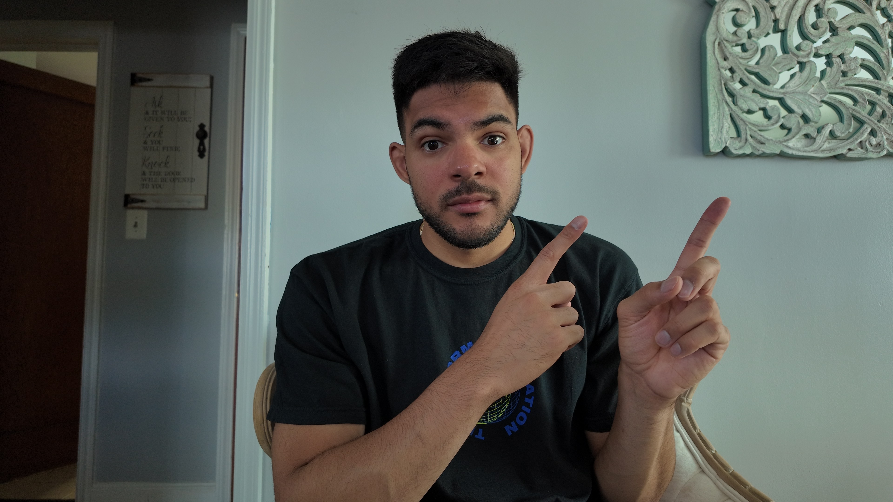

Jeremy Santana

Summary
Dynamic UX/UI Designer with 3+ years of experience specializing in user-centric design and impactful
user experiences. Proficient in the entire design process from research and ideation to wireframing,
prototyping, and testing. Certified in Google UX Design and Software Engineering, excelling in cross-
functional collaboration to drive product innovation and enhance user satisfaction. Experienced in both
web and mobile app design development, with a strong portfolio showcasing user-focused design thinking
and creativity.
Education
Bachelors in Science, Lehman College | Bronx, NY
Work Eperience
Freelance Designer - Designed with Grace | Queens, NY
Nov 2021 - Present
- Led comprehensive UX research initiatives, aligning stakeholder goals with user needs through
detailed field visits, ethnography, and surveys, resulting in a 40% improvement in user engagement.
- Conducted A/B testing and benchmark studies to gain user behavior and preferences insights, leading
to a 25% increase in user satisfaction scores.
- Developed and iterated wireframes and prototypes based on research findings, ensuring alignment of
project objectives and user needs, which decreased development time by 15%.
- Advocated for user research findings to stakeholders, contributing to a 50% revenue growth within the
first year of launching the website, with a 30% increase in customer retention.
Manager - Jcrew | New York, NY
Jan 2020 - Aug 2023
- Increased operational efficiency by 20% and boosted customer satisfaction scores by 15% by
effectively managing daily store operations and leading a team of 15 associates.
- Drove a 25% increase in in-store traffic and a 30% rise in revenue through strategic visual
merchandising and successful promotional events.
- Trained over 30 new associates, leading to a 95% retention rate and consistently high service quality
across the team.
- Resolved customer inquiries and operational challenges with a 90% success rate, enhancing customer
experience and operational efficiency.
Skills
- HTML/CSS
- Web and Mobile Design
- User Research & Testing
- Figma
Certifications
UX/UI Design, Google | 2023
Software Engineering, Flatiron School | 2021